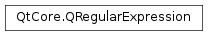

QRegularExpression¶
Synopsis¶
Functions¶
- def
__eq__(re) - def
__ne__(re) - def
captureCount() - def
errorString() - def
globalMatch(subjectRef[, offset=0[, matchType=NormalMatch[, matchOptions=QRegularExpression.NoMatchOption]]]) - def
globalMatch(subject[, offset=0[, matchType=NormalMatch[, matchOptions=QRegularExpression.NoMatchOption]]]) - def
isValid() - def
match(subjectRef[, offset=0[, matchType=NormalMatch[, matchOptions=QRegularExpression.NoMatchOption]]]) - def
match(subject[, offset=0[, matchType=NormalMatch[, matchOptions=QRegularExpression.NoMatchOption]]]) - def
namedCaptureGroups() - def
optimize() - def
pattern() - def
patternErrorOffset() - def
patternOptions() - def
setPattern(pattern) - def
setPatternOptions(options) - def
swap(other)
Detailed Description¶
The
PySide2.QtCore.QRegularExpressionclass provides pattern matching using regular expressions.Regular expressions, or regexps , are a very powerful tool to handle strings and texts. This is useful in many contexts, e.g.,
Validation A regexp can test whether a substring meets some criteria, e.g. is an integer or contains no whitespace. Searching A regexp provides more powerful pattern matching than simple substring matching, e.g., match one of the words mail , letter or correspondence , but none of the words email , mailman , mailer , letterbox , etc. Search and Replace A regexp can replace all occurrences of a substring with a different substring, e.g., replace all occurrences of & with & except where the & is already followed by an amp; . String Splitting A regexp can be used to identify where a string should be split apart, e.g. splitting tab-delimited strings. This document is by no means a complete reference to pattern matching using regular expressions, and the following parts will require the reader to have some basic knowledge about Perl-like regular expressions and their pattern syntax.
Good references about regular expressions include:
- Mastering Regular Expressions (Third Edition) by Jeffrey E. F. Friedl, ISBN 0-596-52812-4;
- the pcrepattern(3) man page, describing the pattern syntax supported by PCRE (the reference implementation of Perl-compatible regular expressions);
- the Perl’s regular expression documentation and the Perl’s regular expression tutorial.
Introduction¶
PySide2.QtCore.QRegularExpressionimplements Perl-compatible regular expressions. It fully supports Unicode. For an overview of the regular expression syntax supported byPySide2.QtCore.QRegularExpression, please refer to the aforementioned pcrepattern(3) man page. A regular expression is made up of two things: a pattern string and a set of pattern options that change the meaning of the pattern string.You can set the pattern string by passing a string to the
PySide2.QtCore.QRegularExpressionconstructor:QRegularExpression re("a pattern");This sets the pattern string to
a pattern. You can also use thePySide2.QtCore.QRegularExpression.setPattern()function to set a pattern on an existingPySide2.QtCore.QRegularExpressionobject:QRegularExpression re; re.setPattern("another pattern");Note that due to C++ literal strings rules, you must escape all backslashes inside the pattern string with another backslash:
// matches two digits followed by a space and a word QRegularExpression re("\\d\\d \\w+"); // matches a backslash QRegularExpression re2("\\\\");The
PySide2.QtCore.QRegularExpression.pattern()function returns the pattern that is currently set for aPySide2.QtCore.QRegularExpressionobject:QRegularExpression re("a third pattern"); QString pattern = re.pattern(); // pattern == "a third pattern"
Pattern Options¶
The meaning of the pattern string can be modified by setting one or more pattern options . For instance, it is possible to set a pattern to match case insensitively by setting the
QRegularExpression.CaseInsensitiveOption.You can set the options by passing them to the
PySide2.QtCore.QRegularExpressionconstructor, as in:// matches "Qt rocks", but also "QT rocks", "QT ROCKS", "qT rOcKs", etc. QRegularExpression re("Qt rocks", QRegularExpression::CaseInsensitiveOption);Alternatively, you can use the
PySide2.QtCore.QRegularExpression.setPatternOptions()function on an existing QRegularExpressionObject:QRegularExpression re("^\\d+$"); re.setPatternOptions(QRegularExpression::MultilineOption); // re matches any line in the subject string that contains only digits (but at least one)It is possible to get the pattern options currently set on a
PySide2.QtCore.QRegularExpressionobject by using thePySide2.QtCore.QRegularExpression.patternOptions()function:QRegularExpression re = QRegularExpression("^two.*words$", QRegularExpression::MultilineOption | QRegularExpression::DotMatchesEverythingOption); QRegularExpression::PatternOptions options = re.patternOptions(); // options == QRegularExpression::MultilineOption | QRegularExpression::DotMatchesEverythingOptionPlease refer to the
QRegularExpression.PatternOptionenum documentation for more information about each pattern option.
Match Type and Match Options¶
The last two arguments of the
PySide2.QtCore.QRegularExpression.match()and thePySide2.QtCore.QRegularExpression.globalMatch()functions set the match type and the match options. The match type is a value of theQRegularExpression.MatchTypeenum; the “traditional” matching algorithm is chosen by using theNormalMatchmatch type (the default). It is also possible to enable partial matching of the regular expression against a subject string: see thepartial matchingsection for more details.The match options are a set of one or more
QRegularExpression.MatchOptionvalues. They change the way a specific match of a regular expression against a subject string is done. Please refer to theQRegularExpression.MatchOptionenum documentation for more details.
Normal Matching¶
In order to perform a match you can simply invoke the
PySide2.QtCore.QRegularExpression.match()function passing a string to match against. We refer to this string as the subject string . The result of thePySide2.QtCore.QRegularExpression.match()function is aPySide2.QtCore.QRegularExpressionMatchobject that can be used to inspect the results of the match. For instance:// match two digits followed by a space and a word QRegularExpression re("\\d\\d \\w+"); QRegularExpressionMatch match = re.match("abc123 def"); bool hasMatch = match.hasMatch(); // trueIf a match is successful, the (implicit) capturing group number 0 can be used to retrieve the substring matched by the entire pattern (see also the section about
extracting captured substrings):QRegularExpression re("\\d\\d \\w+"); QRegularExpressionMatch match = re.match("abc123 def"); if (match.hasMatch()) { QString matched = match.captured(0); // matched == "23 def" // ... }It’s also possible to start a match at an arbitrary offset inside the subject string by passing the offset as an argument of the
PySide2.QtCore.QRegularExpression.match()function. In the following example"12 abc"is not matched because the match is started at offset 1:QRegularExpression re("\\d\\d \\w+"); QRegularExpressionMatch match = re.match("12 abc 45 def", 1); if (match.hasMatch()) { QString matched = match.captured(0); // matched == "45 def" // ... }
Extracting captured substrings¶
The
PySide2.QtCore.QRegularExpressionMatchobject contains also information about the substrings captured by the capturing groups in the pattern string. ThePySide2.QtCore.QRegularExpressionMatch.captured()function will return the string captured by the n-th capturing group:QRegularExpression re("^(\\d\\d)/(\\d\\d)/(\\d\\d\\d\\d)$"); QRegularExpressionMatch match = re.match("08/12/1985"); if (match.hasMatch()) { QString day = match.captured(1); // day == "08" QString month = match.captured(2); // month == "12" QString year = match.captured(3); // year == "1985" // ... }Capturing groups in the pattern are numbered starting from 1, and the implicit capturing group 0 is used to capture the substring that matched the entire pattern.
It’s also possible to retrieve the starting and the ending offsets (inside the subject string) of each captured substring, by using the
PySide2.QtCore.QRegularExpressionMatch.capturedStart()and thePySide2.QtCore.QRegularExpressionMatch.capturedEnd()functions:QRegularExpression re("abc(\\d+)def"); QRegularExpressionMatch match = re.match("XYZabc123defXYZ"); if (match.hasMatch()) { int startOffset = match.capturedStart(1); // startOffset == 6 int endOffset = match.capturedEnd(1); // endOffset == 9 // ... }All of these functions have an overload taking a
PySide2.QtCore.QStringas a parameter in order to extract named captured substrings. For instance:QRegularExpression re("^(?<date>\\d\\d)/(?<month>\\d\\d)/(?<year>\\d\\d\\d\\d)$"); QRegularExpressionMatch match = re.match("08/12/1985"); if (match.hasMatch()) { QString date = match.captured("date"); // date == "08" QString month = match.captured("month"); // month == "12" QString year = match.captured("year"); // year == 1985 }
Global Matching¶
Global matching is useful to find all the occurrences of a given regular expression inside a subject string. Suppose that we want to extract all the words from a given string, where a word is a substring matching the pattern
\w+.
QRegularExpression.globalMatchreturns aPySide2.QtCore.QRegularExpressionMatchIterator, which is a Java-like forward iterator that can be used to iterate over the results. For instance:QRegularExpression re("(\\w+)"); QRegularExpressionMatchIterator i = re.globalMatch("the quick fox");Since it’s a Java-like iterator, the
PySide2.QtCore.QRegularExpressionMatchIteratorwill point immediately before the first result. Every result is returned as aPySide2.QtCore.QRegularExpressionMatchobject. ThePySide2.QtCore.QRegularExpressionMatchIterator.hasNext()function will return true if there’s at least one more result, andPySide2.QtCore.QRegularExpressionMatchIterator.next()will return the next result and advance the iterator. Continuing from the previous example:QStringList words; while (i.hasNext()) { QRegularExpressionMatch match = i.next(); QString word = match.captured(1); words << word; } // words contains "the", "quick", "fox"You can also use
PySide2.QtCore.QRegularExpressionMatchIterator.peekNext()to get the next result without advancing the iterator.It is possible to pass a starting offset and one or more match options to the
PySide2.QtCore.QRegularExpression.globalMatch()function, exactly like normal matching withPySide2.QtCore.QRegularExpression.match().
Partial Matching¶
A partial match is obtained when the end of the subject string is reached, but more characters are needed to successfully complete the match. Note that a partial match is usually much more inefficient than a normal match because many optimizations of the matching algorithm cannot be employed.
A partial match must be explicitly requested by specifying a match type of
PartialPreferCompleteMatchorPartialPreferFirstMatchwhen callingQRegularExpression.matchorQRegularExpression.globalMatch. If a partial match is found, then calling thePySide2.QtCore.QRegularExpressionMatch.hasMatch()function on thePySide2.QtCore.QRegularExpressionMatchobject returned byPySide2.QtCore.QRegularExpression.match()will returnfalse, butPySide2.QtCore.QRegularExpressionMatch.hasPartialMatch()will returntrue.When a partial match is found, no captured substrings are returned, and the (implicit) capturing group 0 corresponding to the whole match captures the partially matched substring of the subject string.
Note that asking for a partial match can still lead to a complete match, if one is found; in this case,
PySide2.QtCore.QRegularExpressionMatch.hasMatch()will returntrueandPySide2.QtCore.QRegularExpressionMatch.hasPartialMatch()false. It never happens that aPySide2.QtCore.QRegularExpressionMatchreports both a partial and a complete match.Partial matching is mainly useful in two scenarios: validating user input in real time and incremental/multi-segment matching.
Validating user input¶
Suppose that we would like the user to input a date in a specific format, for instance “MMM dd, yyyy”. We can check the input validity with a pattern like:
^(Jan|Feb|Mar|Apr|May|Jun|Jul|Aug|Sep|Oct|Nov|Dec) \d\d?, \d\d\d\d$(This pattern doesn’t catch invalid days, but let’s keep it for the example’s purposes).
We would like to validate the input with this regular expression while the user is typing it, so that we can report an error in the input as soon as it is committed (for instance, the user typed the wrong key). In order to do so we must distinguish three cases:
- the input cannot possibly match the regular expression;
- the input does match the regular expression;
- the input does not match the regular expression right now, but it will if more characters will be added to it.
Note that these three cases represent exactly the possible states of a
PySide2.QtGui.QValidator(see theQValidator.Stateenum).In particular, in the last case we want the regular expression engine to report a partial match: we are successfully matching the pattern against the subject string but the matching cannot continue because the end of the subject is encountered. Notice, however, that the matching algorithm should continue and try all possibilities, and in case a complete (non-partial) match is found, then this one should be reported, and the input string accepted as fully valid.
This behaviour is implemented by the
PartialPreferCompleteMatchmatch type. For instance:QString pattern("^(Jan|Feb|Mar|Apr|May|Jun|Jul|Aug|Sep|Oct|Nov|Dec) \\d\\d?, \\d\\d\\d\\d$"); QRegularExpression re(pattern); QString input("Jan 21,"); QRegularExpressionMatch match = re.match(input, 0, QRegularExpression::PartialPreferCompleteMatch); bool hasMatch = match.hasMatch(); // false bool hasPartialMatch = match.hasPartialMatch(); // trueIf matching the same regular expression against the subject string leads to a complete match, it is reported as usual:
QString input("Dec 8, 1985"); QRegularExpressionMatch match = re.match(input, 0, QRegularExpression::PartialPreferCompleteMatch); bool hasMatch = match.hasMatch(); // true bool hasPartialMatch = match.hasPartialMatch(); // falseAnother example with a different pattern, showing the behaviour of preferring a complete match over a partial one:
QRegularExpression re("abc\\w+X|def"); QRegularExpressionMatch match = re.match("abcdef", 0, QRegularExpression::PartialPreferCompleteMatch); bool hasMatch = match.hasMatch(); // true bool hasPartialMatch = match.hasPartialMatch(); // false QString captured = match.captured(0); // captured == "def"In this case, the subpattern
abc\\w+Xpartially matches the subject string; however, the subpatterndefmatches the subject string completely, and therefore a complete match is reported.If multiple partial matches are found when matching (but no complete match), then the
PySide2.QtCore.QRegularExpressionMatchobject will report the first one that is found. For instance:QRegularExpression re("abc\\w+X|defY"); QRegularExpressionMatch match = re.match("abcdef", 0, QRegularExpression::PartialPreferCompleteMatch); bool hasMatch = match.hasMatch(); // false bool hasPartialMatch = match.hasPartialMatch(); // true QString captured = match.captured(0); // captured == "abcdef"
Incremental/multi-segment matching¶
Incremental matching is another use case of partial matching. Suppose that we want to find the occurrences of a regular expression inside a large text (that is, substrings matching the regular expression). In order to do so we would like to “feed” the large text to the regular expression engines in smaller chunks. The obvious problem is what happens if the substring that matches the regular expression spans across two or more chunks.
In this case, the regular expression engine should report a partial match, so that we can match again adding new data and (eventually) get a complete match. This implies that the regular expression engine may assume that there are other characters beyond the end of the subject string. This is not to be taken literally – the engine will never try to access any character after the last one in the subject.
PySide2.QtCore.QRegularExpressionimplements this behaviour when using thePartialPreferFirstMatchmatch type. This match type reports a partial match as soon as it is found, and other match alternatives are not tried (even if they could lead to a complete match). For instance:QRegularExpression re("abc|ab"); QRegularExpressionMatch match = re.match("ab", 0, QRegularExpression::PartialPreferFirstMatch); bool hasMatch = match.hasMatch(); // false bool hasPartialMatch = match.hasPartialMatch(); // trueThis happens because when matching the first branch of the alternation operator a partial match is found, and therefore matching stops, without trying the second branch. Another example:
QRegularExpression re("abc(def)?"); QRegularExpressionMatch match = re.match("abc", 0, QRegularExpression::PartialPreferFirstMatch); bool hasMatch = match.hasMatch(); // false bool hasPartialMatch = match.hasPartialMatch(); // trueThis shows what could seem a counterintuitve behaviour of quantifiers: since
?is greedy, then the engine tries first to continue the match after having matched"abc"; but then the matching reaches the end of the subject string, and therefore a partial match is reported. This is even more surprising in the following example:QRegularExpression re("(abc)*"); QRegularExpressionMatch match = re.match("abc", 0, QRegularExpression::PartialPreferFirstMatch); bool hasMatch = match.hasMatch(); // false bool hasPartialMatch = match.hasPartialMatch(); // trueIt’s easy to understand this behaviour if we remember that the engine expects the subject string to be only a substring of the whole text we’re looking for a match into (that is, how we said before, that the engine assumes that there are other characters beyond the end of the subject string).
Since the
*quantifier is greedy, then reporting a complete match could be an error, because after the current subject"abc"there may be other occurrences of"abc". For instance, the complete text could have been “abcabcX”, and therefore the right match to report (in the complete text) would have been"abcabc"; by matching only against the leading"abc"we instead get a partial match.
Error Handling¶
It is possible for a
PySide2.QtCore.QRegularExpressionobject to be invalid because of syntax errors in the pattern string. ThePySide2.QtCore.QRegularExpression.isValid()function will return true if the regular expression is valid, or false otherwise:QRegularExpression invalidRe("(unmatched|parenthesis"); bool isValid = invalidRe.isValid(); // falseYou can get more information about the specific error by calling the
PySide2.QtCore.QRegularExpression.errorString()function; moreover, thePySide2.QtCore.QRegularExpression.patternErrorOffset()function will return the offset inside the pattern stringQRegularExpression invalidRe("(unmatched|parenthesis"); if (!invalidRe.isValid()) { QString errorString = invalidRe.errorString(); // errorString == "missing )" int errorOffset = invalidRe.patternErrorOffset(); // errorOffset == 22 // ... }If a match is attempted with an invalid
PySide2.QtCore.QRegularExpression, then the returnedPySide2.QtCore.QRegularExpressionMatchobject will be invalid as well (that is, itsPySide2.QtCore.QRegularExpressionMatch.isValid()function will return false). The same applies for attempting a global match.
Unsupported Perl-compatible Regular Expressions Features¶
PySide2.QtCore.QRegularExpressiondoes not support all the features available in Perl-compatible regular expressions. The most notable one is the fact that duplicated names for capturing groups are not supported, and using them can lead to undefined behaviour.This may change in a future version of Qt.
Notes for QRegExp Users¶
The
PySide2.QtCore.QRegularExpressionclass introduced in Qt 5 is a big improvement uponPySide2.QtCore.QRegExp, in terms of APIs offered, supported pattern syntax and speed of execution. The biggest difference is thatPySide2.QtCore.QRegularExpressionsimply holds a regular expression, and it’s not modified when a match is requested. Instead, aPySide2.QtCore.QRegularExpressionMatchobject is returned, in order to check the result of a match and extract the captured substring. The same applies with global matching andPySide2.QtCore.QRegularExpressionMatchIterator.Other differences are outlined below.
Porting from QRegExp::exactMatch()¶
QRegExp.exactMatch()in Qt 4 served two purposes: it exactly matched a regular expression against a subject string, and it implemented partial matching.
Porting from QRegExp’s Exact Matching¶
Exact matching indicates whether the regular expression matches the entire subject string. For example, the classes yield on the subject string
"abc123":
QRegExp.exactMatch()QRegularExpressionMatch.hasMatch()"\\d+"false true "[a-z]+\\d+"true true Exact matching is not reflected in
PySide2.QtCore.QRegularExpression. If you want to be sure that the subject string matches the regular expression exactly, you can wrap the pattern between a couple of anchoring expressions. Simply putting the pattern between the^and the$anchors is enough in most cases:QRegularExpression re("^this pattern must match exactly$");However, remember that the
$anchor not only matches at the end of the string, but also at a newline character right before the end of the string; that is, the previous pattern matches against the string “this pattern must match exactly\n”. Also, the behaviour of both the^and the$anchors changes if the MultiLineOption is set either explicitly (as a pattern option) or implicitly (as a directive inside the pattern string).Therefore, in the most general case, you should wrap the pattern between the
\Aand the\zanchors:QString p("a .*|pattern"); QRegularExpression re("\\A(?:" + p + ")\\z"); // re matches exactly the pattern string pNote the usage of the non-capturing group in order to preserve the meaning of the branch operator inside the pattern.
Porting from QRegExp’s Partial Matching¶
When using
QRegExp.exactMatch(), if an exact match was not found, one could still find out how much of the subject string was matched by the regular expression by callingQRegExp.matchedLength(). If the returned length was equal to the subject string’s length, then one could conclude that a partial match was found.
PySide2.QtCore.QRegularExpressionsupports partial matching explicitly by means of the appropriateQRegularExpression.MatchType.
Global matching¶
Due to limitations of the
PySide2.QtCore.QRegExpAPI it was impossible to implement global matching correctly (that is, like Perl does). In particular, patterns that can match 0 characters (like"a*") are problematic.
QRegularExpression.globalMatch()implements Perl global match correctly, and the returned iterator can be used to examine each result.
Unicode properties support¶
When using
PySide2.QtCore.QRegExp, character classes such as\w,\d, etc. match characters with the corresponding Unicode property: for instance,\dmatches any character with the Unicode Nd (decimal digit) property.Those character classes only match ASCII characters by default when using
PySide2.QtCore.QRegularExpression: for instance,\dmatches exactly a character in the0-9ASCII range. It is possible to change this behaviour by using theUseUnicodePropertiesOptionpattern option.
Wildcard matching¶
There is no equivalent of wildcard matching inPySide2.QtCore.QRegularExpression. Nevertheless, rewriting a regular expression in wildcard syntax to a Perl-compatible regular expression is a very easy task, given the fact that wildcard syntax supported byPySide2.QtCore.QRegExpis very simple.
Other pattern syntaxes¶
PySide2.QtCore.QRegularExpressionsupports only Perl-compatible regular expressions.
Minimal matching¶
QRegExp.setMinimal()implemented minimal matching by simply reversing the greediness of the quantifiers (PySide2.QtCore.QRegExpdid not support lazy quantifiers, like*?,+?, etc.).PySide2.QtCore.QRegularExpressioninstead does support greedy, lazy and possessive quantifiers. TheInvertedGreedinessOptionpattern option can be useful to emulate the effects ofQRegExp.setMinimal(): if enabled, it inverts the greediness of quantifiers (greedy ones become lazy and vice versa).
Caret modes¶
TheAnchoredMatchOptionmatch option can be used to emulate theQRegExp.CaretAtOffsetbehaviour. There is no equivalent for the otherQRegExp.CaretModemodes.
Debugging Code that Uses QRegularExpression¶
PySide2.QtCore.QRegularExpressioninternally uses a just in time compiler (JIT) to optimize the execution of the matching algorithm. The JIT makes extensive usage of self-modifying code, which can lead debugging tools such as Valgrind to crash. You must enable all checks for self-modifying code if you want to debug programs usingPySide2.QtCore.QRegularExpression(f.i., see Valgrind’s--smc-checkcommand line option). The downside of enabling such checks is that your program will run considerably slower.To avoid that, the JIT is disabled by default if you compile Qt in debug mode. It is possible to override the default and enable or disable the JIT usage (both in debug or release mode) by setting the
QT_ENABLE_REGEXP_JITenvironment variable to a non-zero or zero value respectively.
-
class
PySide2.QtCore.QRegularExpression¶ -
class
PySide2.QtCore.QRegularExpression(re) -
class
PySide2.QtCore.QRegularExpression(pattern[, options=QRegularExpression.NoPatternOption]) Parameters: - re –
PySide2.QtCore.QRegularExpression - options –
PySide2.QtCore.QRegularExpression.PatternOptions - pattern – unicode
Constructs a
PySide2.QtCore.QRegularExpressionobject with an empty pattern and no pattern options.See also
PySide2.QtCore.QRegularExpression.setPattern()PySide2.QtCore.QRegularExpression.setPatternOptions()Constructs a
PySide2.QtCore.QRegularExpressionobject as a copy ofre.See also
PySide2.QtCore.QRegularExpression.operator=()Constructs a
PySide2.QtCore.QRegularExpressionobject using the givenpatternas pattern and theoptionsas the pattern options.- re –
-
PySide2.QtCore.QRegularExpression.PatternOption¶ The enum defines modifiers to the way the pattern string should be interpreted, and therefore the way the pattern matches against a subject string.
Constant Description QRegularExpression.NoPatternOption No pattern options are set. QRegularExpression.CaseInsensitiveOption The pattern should match against the subject string in a case insensitive way. This option corresponds to the /i modifier in Perl regular expressions. QRegularExpression.DotMatchesEverythingOption The dot metacharacter ( .) in the pattern string is allowed to match any character in the subject string, including newlines (normally, the dot does not match newlines). This option corresponds to the/smodifier in Perl regular expressions.QRegularExpression.MultilineOption The caret ( ^) and the dollar ($) metacharacters in the pattern string are allowed to match, respectively, immediately after and immediately before any newline in the subject string, as well as at the very beginning and at the very end of the subject string. This option corresponds to the/mmodifier in Perl regular expressions.QRegularExpression.ExtendedPatternSyntaxOption Any whitespace in the pattern string which is not escaped and outside a character class is ignored. Moreover, an unescaped sharp (#) outside a character class causes all the following characters, until the first newline (included), to be ignored. This can be used to increase the readability of a pattern string as well as put comments inside regular expressions; this is particulary useful if the pattern string is loaded from a file or written by the user, because in C++ code it is always possible to use the rules for string literals to put comments outside the pattern string. This option corresponds to the /xmodifier in Perl regular expressions.QRegularExpression.InvertedGreedinessOption The greediness of the quantifiers is inverted: *,+,?,{m,n}, etc. become lazy, while their lazy versions (*?,+?,??,{m,n}?, etc.) become greedy. There is no equivalent for this option in Perl regular expressions.QRegularExpression.DontCaptureOption The non-named capturing groups do not capture substrings; named capturing groups still work as intended, as well as the implicit capturing group number 0 corresponding to the entire match. There is no equivalent for this option in Perl regular expressions. QRegularExpression.UseUnicodePropertiesOption The meaning of the \w,\d, etc., character classes, as well as the meaning of their counterparts (\W,\D, etc.), is changed from matching ASCII characters only to matching any character with the corresponding Unicode property. For instance,\dis changed to match any character with the Unicode Nd (decimal digit) property;\wto match any character with either the Unicode L (letter) or N (digit) property, plus underscore, and so on. This option corresponds to the/umodifier in Perl regular expressions.QRegularExpression.OptimizeOnFirstUsageOption The regular expression will be optimized (and possibly JIT-compiled) on its first usage, instead of after a certain (undefined) number of usages. See also PySide2.QtCore.QRegularExpression.optimize(). This enum value has been introduced in Qt 5.4.QRegularExpression.DontAutomaticallyOptimizeOption Regular expressions are automatically optimized after a certain number of usages; setting this option prevents such optimizations, therefore avoiding possible unpredictable spikes in CPU and memory usage. If both this option and the OptimizeOnFirstUsageOptionoption are set, then this option takes precedence. Note: this option will still let the regular expression to be optimized by manually callingPySide2.QtCore.QRegularExpression.optimize(). This enum value has been introduced in Qt 5.4.
-
PySide2.QtCore.QRegularExpression.MatchType¶ The enum defines the type of the match that should be attempted against the subject string.
Constant Description QRegularExpression.NormalMatch A normal match is done. QRegularExpression.PartialPreferCompleteMatch The pattern string is matched partially against the subject string. If a partial match is found, then it is recorded, and other matching alternatives are tried as usual. If a complete match is then found, then it’s preferred to the partial match; in this case only the complete match is reported. If instead no complete match is found (but only the partial one), then the partial one is reported. QRegularExpression.PartialPreferFirstMatch The pattern string is matched partially against the subject string. If a partial match is found, then matching stops and the partial match is reported. In this case, other matching alternatives (potentially leading to a complete match) are not tried. Moreover, this match type assumes that the subject string only a substring of a larger text, and that (in this text) there are other characters beyond the end of the subject string. This can lead to surprising results; see the discussion in the partial matchingsection for more details.QRegularExpression.NoMatch No matching is done. This value is returned as the match type by a default constructed PySide2.QtCore.QRegularExpressionMatchorPySide2.QtCore.QRegularExpressionMatchIterator. Using this match type is not very useful for the user, as no matching ever happens. This enum value has been introduced in Qt 5.1.
-
PySide2.QtCore.QRegularExpression.MatchOption¶ Constant Description QRegularExpression.NoMatchOption No match options are set. QRegularExpression.AnchoredMatchOption The match is constrained to start exactly at the offset passed to PySide2.QtCore.QRegularExpression.match()in order to be successful, even if the pattern string does not contain any metacharacter that anchors the match at that point.QRegularExpression.DontCheckSubjectStringMatchOption The subject string is not checked for UTF-16 validity before attempting a match. Use this option with extreme caution, as attempting to match an invalid string may crash the program and/or constitute a security issue. This enum value has been introduced in Qt 5.4.
-
PySide2.QtCore.QRegularExpression.captureCount()¶ Return type: PySide2.QtCore.intReturns the number of capturing groups inside the pattern string, or -1 if the regular expression is not valid.
Note
The implicit capturing group 0 is not included in the returned number.
-
PySide2.QtCore.QRegularExpression.errorString()¶ Return type: unicode Returns a textual description of the error found when checking the validity of the regular expression, or “no error” if no error was found.
-
static
PySide2.QtCore.QRegularExpression.escape(str)¶ Parameters: str – unicode Return type: unicode Escapes all characters of
strso that they no longer have any special meaning when used as a regular expression pattern string, and returns the escaped string. For instance:QString escaped = QRegularExpression::escape("a(x) = f(x) + g(x)"); // escaped == "a\\(x\\)\\ \\=\\ f\\(x\\)\\ \\+\\ g\\(x\\)"
This is very convenient in order to build patterns from arbitrary strings:
QString pattern = "(" + QRegularExpression::escape(name) + "|" + QRegularExpression::escape(nickname) + ")"; QRegularExpression re(pattern);
Note
This function implements Perl’s quotemeta algorithm and escapes with a backslash all characters in
str, except for the characters in the[A-Z],[a-z]and[0-9]ranges, as well as the underscore (_) character. The only difference with Perl is that a literal NUL insidestris escaped with the sequence"\\0"(backslash +'0'), instead of"\\\0"(backslash +NUL).
-
PySide2.QtCore.QRegularExpression.globalMatch(subject[, offset=0[, matchType=NormalMatch[, matchOptions=QRegularExpression.NoMatchOption]]])¶ Parameters: - subject – unicode
- offset –
PySide2.QtCore.int - matchType –
PySide2.QtCore.QRegularExpression.MatchType - matchOptions –
PySide2.QtCore.QRegularExpression.MatchOptions
Return type: Attempts to perform a global match of the regular expression against the given
subjectstring, starting at the positionoffsetinside the subject, using a match of typematchTypeand honoring the givenmatchOptions.The returned
PySide2.QtCore.QRegularExpressionMatchIteratoris positioned before the first match result (if any).See also
PySide2.QtCore.QRegularExpressionMatchIteratorglobal matching
-
PySide2.QtCore.QRegularExpression.globalMatch(subjectRef[, offset=0[, matchType=NormalMatch[, matchOptions=QRegularExpression.NoMatchOption]]]) Parameters: - subjectRef –
PySide2.QtCore.QStringRef - offset –
PySide2.QtCore.int - matchType –
PySide2.QtCore.QRegularExpression.MatchType - matchOptions –
PySide2.QtCore.QRegularExpression.MatchOptions
Return type: This is an overloaded function.
Attempts to perform a global match of the regular expression against the given
subjectRefstring reference, starting at the positionoffsetinside the subject, using a match of typematchTypeand honoring the givenmatchOptions.The returned
PySide2.QtCore.QRegularExpressionMatchIteratoris positioned before the first match result (if any).See also
PySide2.QtCore.QRegularExpressionMatchIteratorglobal matching- subjectRef –
-
PySide2.QtCore.QRegularExpression.isValid()¶ Return type: PySide2.QtCore.boolReturns
trueif the regular expression is a valid regular expression (that is, it contains no syntax errors, etc.), or false otherwise. UsePySide2.QtCore.QRegularExpression.errorString()to obtain a textual description of the error.
-
PySide2.QtCore.QRegularExpression.match(subject[, offset=0[, matchType=NormalMatch[, matchOptions=QRegularExpression.NoMatchOption]]])¶ Parameters: - subject – unicode
- offset –
PySide2.QtCore.int - matchType –
PySide2.QtCore.QRegularExpression.MatchType - matchOptions –
PySide2.QtCore.QRegularExpression.MatchOptions
Return type: Attempts to match the regular expression against the given
subjectstring, starting at the positionoffsetinside the subject, using a match of typematchTypeand honoring the givenmatchOptions.The returned
PySide2.QtCore.QRegularExpressionMatchobject contains the results of the match.See also
PySide2.QtCore.QRegularExpressionMatchnormal matching
-
PySide2.QtCore.QRegularExpression.match(subjectRef[, offset=0[, matchType=NormalMatch[, matchOptions=QRegularExpression.NoMatchOption]]]) Parameters: - subjectRef –
PySide2.QtCore.QStringRef - offset –
PySide2.QtCore.int - matchType –
PySide2.QtCore.QRegularExpression.MatchType - matchOptions –
PySide2.QtCore.QRegularExpression.MatchOptions
Return type: This is an overloaded function.
Attempts to match the regular expression against the given
subjectRefstring reference, starting at the positionoffsetinside the subject, using a match of typematchTypeand honoring the givenmatchOptions.The returned
PySide2.QtCore.QRegularExpressionMatchobject contains the results of the match.See also
PySide2.QtCore.QRegularExpressionMatchnormal matching- subjectRef –
-
PySide2.QtCore.QRegularExpression.namedCaptureGroups()¶ Return type: list of strings Returns a list of
PySide2.QtCore.QRegularExpression.captureCount()+ 1 elements, containing the names of the named capturing groups in the pattern string. The list is sorted such that the element of the list at positioniis the name of thei-th capturing group, if it has a name, or an empty string if that capturing group is unnamed.For instance, given the regular expression
(?<day>\d\d)-(?<month>\d\d)-(?<year>\d\d\d\d) (\w+) (?<name>\w+)
will return the following list:
("", "day", "month", "year", "", "name")
which corresponds to the fact that the capturing group #0 (corresponding to the whole match) has no name, the capturing group #1 has name “day”, the capturing group #2 has name “month”, etc.
If the regular expression is not valid, returns an empty list.
See also
PySide2.QtCore.QRegularExpression.isValid()QRegularExpressionMatch.captured()QString.isEmpty()
-
PySide2.QtCore.QRegularExpression.__ne__(re)¶ Parameters: re – PySide2.QtCore.QRegularExpressionReturn type: PySide2.QtCore.boolReturns
trueif the regular expression is different fromre, or false otherwise.See also
PySide2.QtCore.QRegularExpression.operator==()
-
PySide2.QtCore.QRegularExpression.__eq__(re)¶ Parameters: re – PySide2.QtCore.QRegularExpressionReturn type: PySide2.QtCore.boolReturns
trueif the regular expression is equal tore, or false otherwise. TwoPySide2.QtCore.QRegularExpressionobjects are equal if they have the same pattern string and the same pattern options.See also
PySide2.QtCore.QRegularExpression.operator!=()
-
PySide2.QtCore.QRegularExpression.optimize()¶ Forces an immediate optimization of the pattern, including JIT-compiling it (if the JIT compiler is enabled).
Patterns are normally optimized only after a certain number of usages. If you can predict that this
PySide2.QtCore.QRegularExpressionobject is going to be used for several matches, it may be convenient to optimize it in advance by calling this function.See also
QRegularExpression.OptimizeOnFirstUsageOption
-
PySide2.QtCore.QRegularExpression.pattern()¶ Return type: unicode Returns the pattern string of the regular expression.
-
PySide2.QtCore.QRegularExpression.patternErrorOffset()¶ Return type: PySide2.QtCore.intReturns the offset, inside the pattern string, at which an error was found when checking the validity of the regular expression. If no error was found, then -1 is returned.
-
PySide2.QtCore.QRegularExpression.patternOptions()¶ Return type: PySide2.QtCore.QRegularExpression.PatternOptionsReturns the pattern options for the regular expression.
-
PySide2.QtCore.QRegularExpression.setPattern(pattern)¶ Parameters: pattern – unicode Sets the pattern string of the regular expression to
pattern. The pattern options are left unchanged.
-
PySide2.QtCore.QRegularExpression.setPatternOptions(options)¶ Parameters: options – PySide2.QtCore.QRegularExpression.PatternOptionsSets the given
optionsas the pattern options of the regular expression. The pattern string is left unchanged.
-
PySide2.QtCore.QRegularExpression.swap(other)¶ Parameters: other – PySide2.QtCore.QRegularExpressionSwaps the regular expression
otherwith this regular expression. This operation is very fast and never fails.
© 2018 The Qt Company Ltd. Documentation contributions included herein are the copyrights of their respective owners. The documentation provided herein is licensed under the terms of the GNU Free Documentation License version 1.3 as published by the Free Software Foundation. Qt and respective logos are trademarks of The Qt Company Ltd. in Finland and/or other countries worldwide. All other trademarks are property of their respective owners.